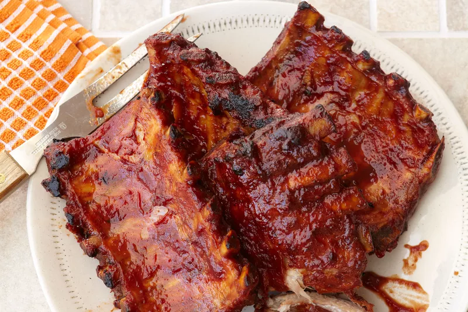

Lasagna

Lasagna but really ribs ;)
Best ribs in town
Made with tneder meat soaked in a multitude of spices and hinez, this is the best ribs that you have
ever tasted
- Put oil in pan
- Marinate ribs with spices and honey
- Add marinated ribs on the pan
- Cook for 20 mmin for well done ribs
- voila, enjoy